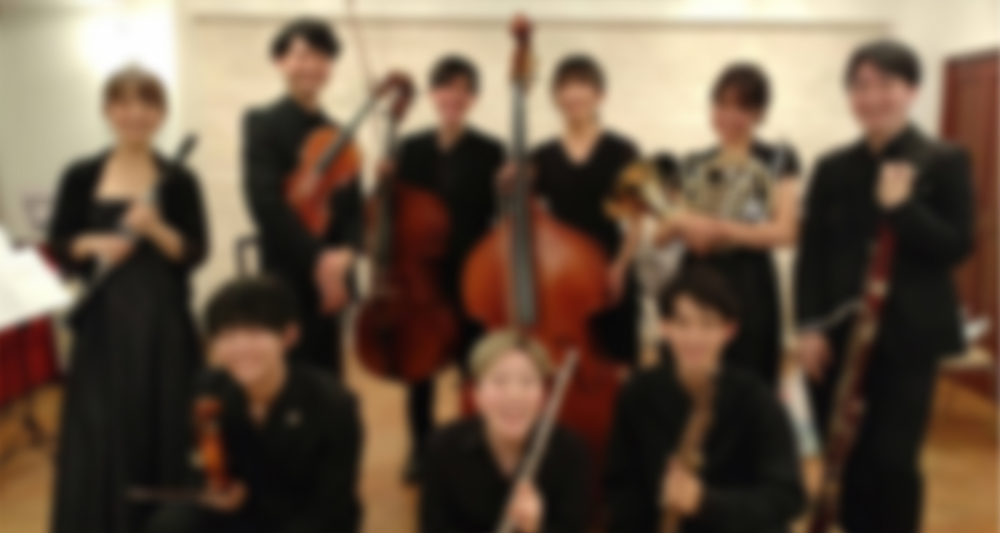
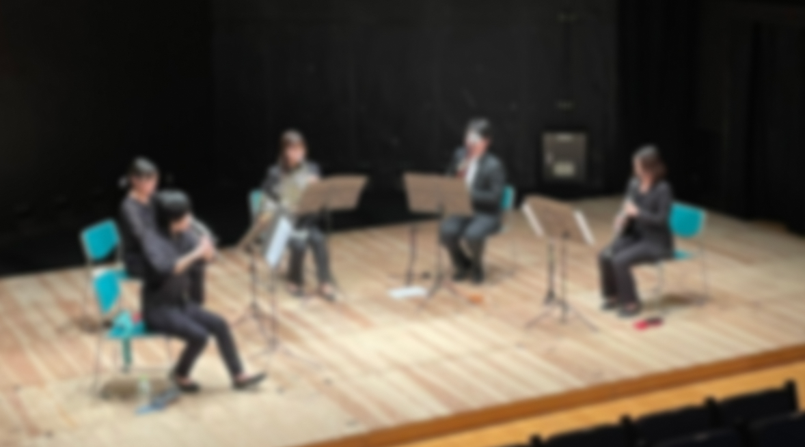
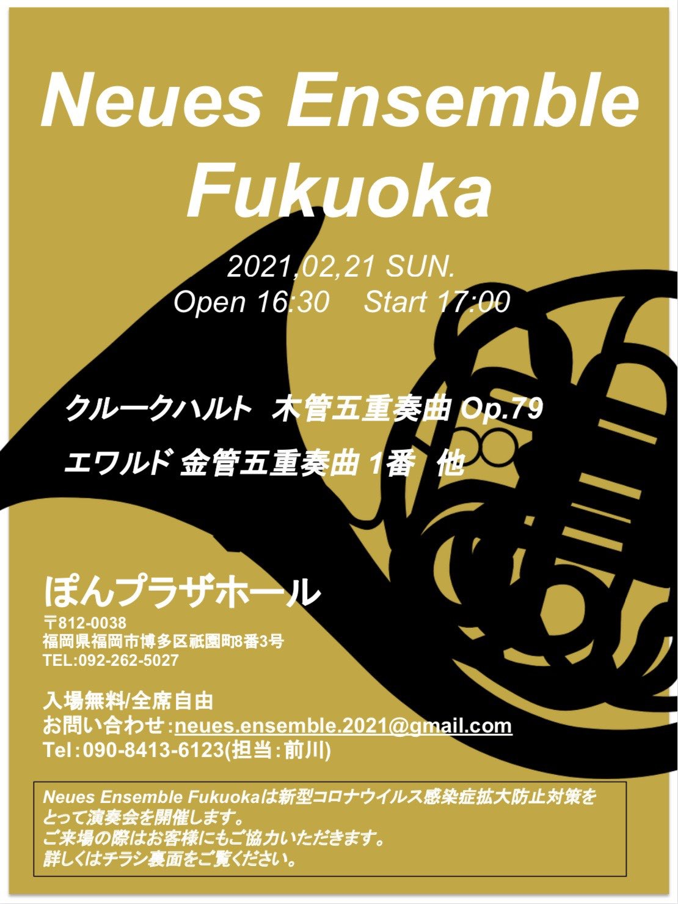
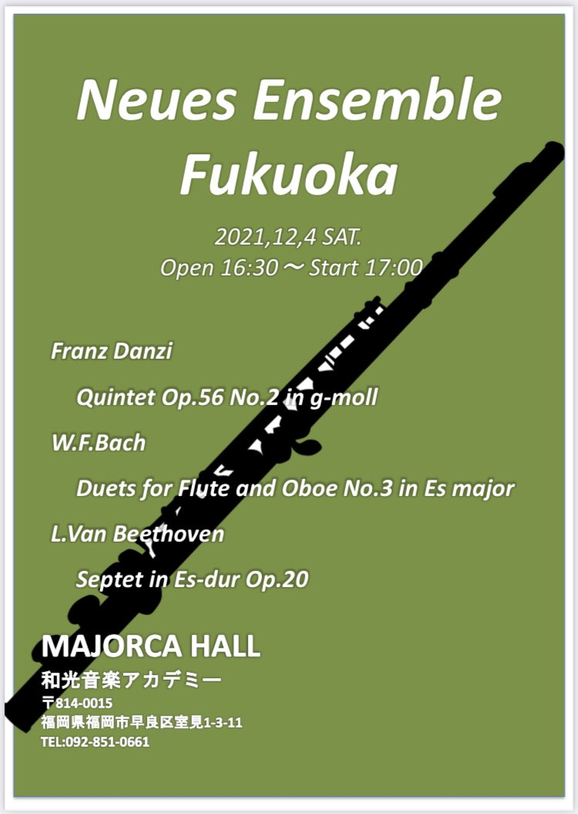

About Us-私たちについて-
"Neues"とは、ドイツ語で「新しい」を意味する言葉です。
この演奏会のテーマは"新たな出会い"。
音楽を通して人とのつながりを広げたい、
という思いから開催することになった当演奏会は、福岡県内の４つのオーケストラのOB,OGが奏者となっています。
なかなか聞く機会のない管楽器と弦楽器のアンサンブルもプログラムに加え、
奏者だけでなく、聴きにきてくださるお客様にも、新たな音楽の出会いが生まれる演奏会となっております。
多くの方々のご来場をお待ちしております。
ご来場いただく方々へ
当演奏会は入場無料の演奏会となっておりますが、感染拡大対策として入場者管理を行います。
つきましては、前日までに下記いずれかの方法でご連絡ください。
- メール
- TwitterのDM

Concert-演奏会情報-
演奏会概要
| 日時 |
2022年12月17日(土) 18:45開演(18:00会場) |
|---|---|
| 会場 |
福岡アジア美術館あじびホール 〒811-4303 福岡県福岡市博多区中洲 |
| 曲目 |
ベルワルド
Grand Septet in B-flat major
シューベルト
String Quartet in D miner, D,810 |
メンバー
| Vn | E.S., S.Y. |
|---|---|
| Vla | K.N. |
| Vc | A.I. |
| Cb | H.O. |
| Cl | S.S. |
| Fg | T.T. |
| Hr | H.S. |

Records-演奏会の記録-
第1回
@ぽんプラザホール
| 日時 | 2022年12月17日(土) |
|---|---|
| 曲目 |
クルークハルト
木管五重奏曲 Op.79
エワルド
金管五重奏曲 1番 他 |

第2回
@和光音楽アカデミー
| 日時 | 2022年12月17日(土) |
|---|---|
| 曲目 |
ダンツィ
Quintet op.56 No.2 in g-mall
ベートーベン
Septet in E major Op.20 他 |
